Week no. 12
Molding and Casting:
- design a 3D mold, machine it, and use it to cast parts
Designing the 3D Mold
This week I did somenthing that I've never tryed before, carving a block of wax, molding and casting.
To do this i first begun by designing a piece, in this case it would be a cover for my brake ligh,
i thought i'd better make something for my final project.
The 3D model you can see below.
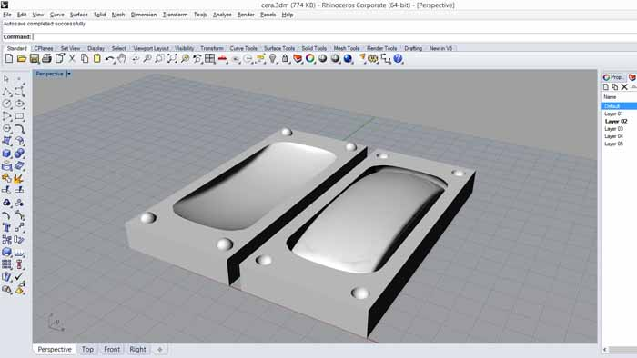
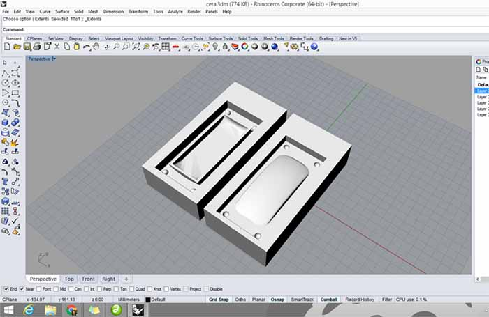
Machining the Mold:
With the negative blocks i went into Aspire to print directly to the machine with the parameters i thought were best.
Just needed to set the Z on the modela V-Panel (zero out the Z axis to the top of the wax).
The paths that were generated as you can be seen in the images below.
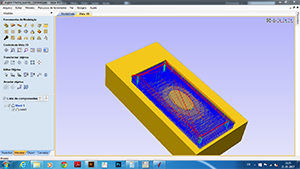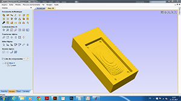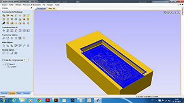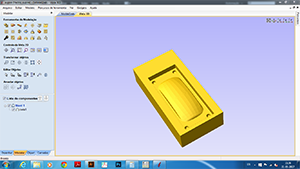
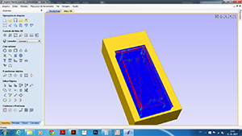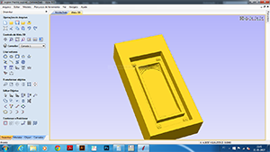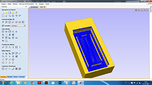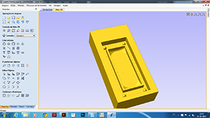
The milling...
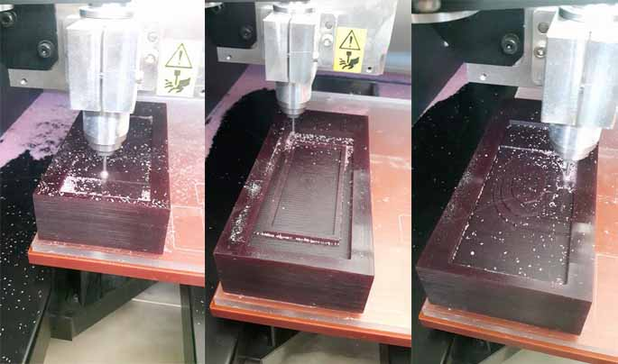
It was my firs time doing this and i was really surprised with the finish cut result!
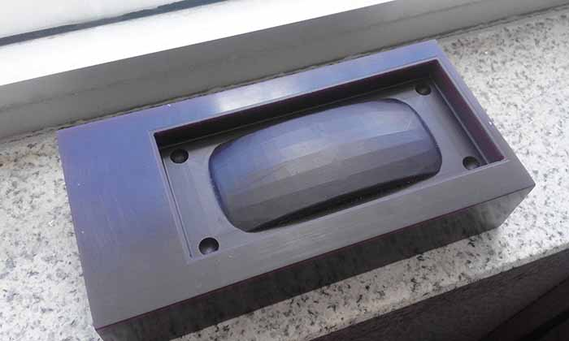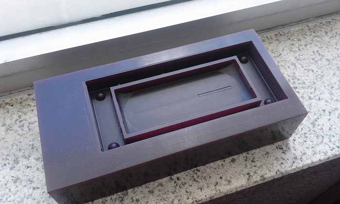
Casting
For the casting we We used Mold Max 30 from Smooth-On :
Frist problem : Open the bucket! Needed to see this first : https://www.smooth-on.com/support/faq/115/
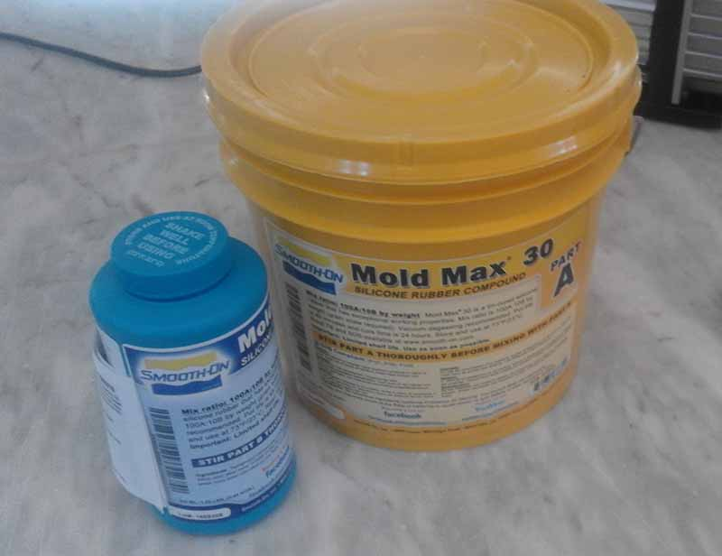
The Mold Max is a tin-cured silicone rubber compound, its a 10A to 1B mix (to weight):
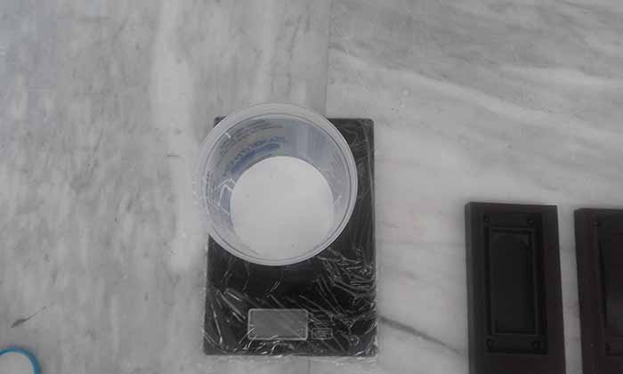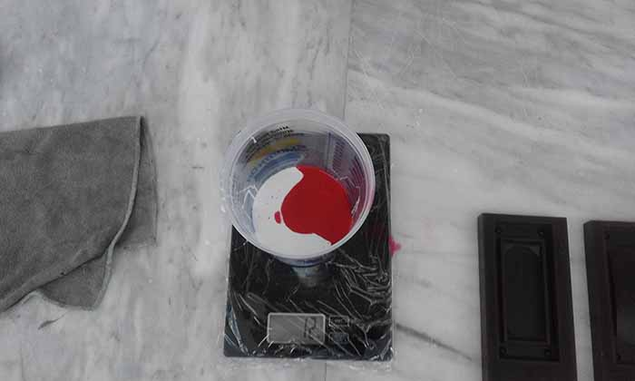
After all was well mixed i puted the cup into the Vacuum degassing chamber.
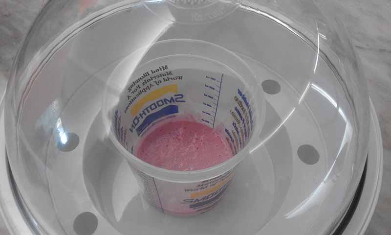
After mix the silicone and pour into the wax mold - this will form a NEGATIVE mold with POSITIVE space:
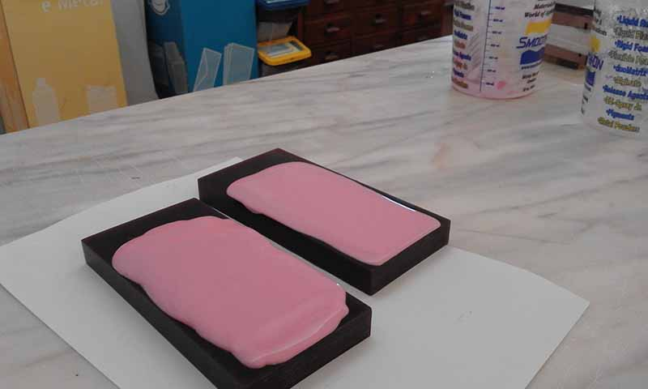
After waiting overnight, I removed the rubber mold from the wax mold.
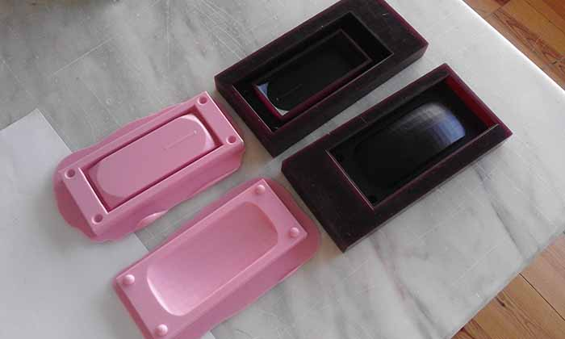
For the cast I used the Smooth-Cast 300 that are bright white and virtually bubble free.
Vacuum degassing is not necessary, 1:1 mix ratio by volume.
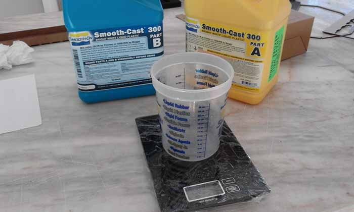
This plastic cures really fast in 7 - 10 minutes!
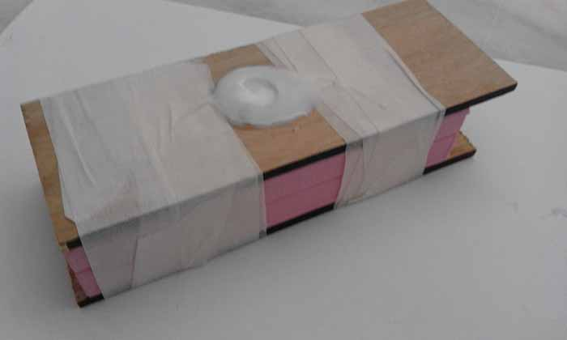
And the final result:
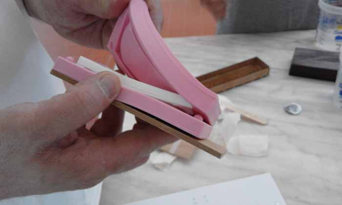
I think it went really well for the first time:
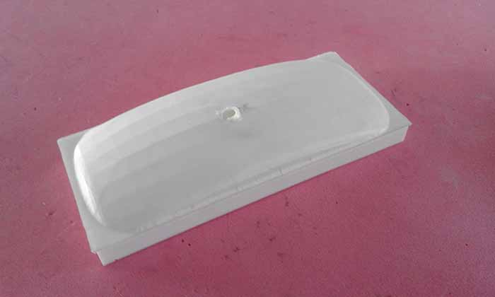